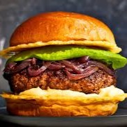

Burger

Description
A hamburger, also called a burger, is a dish consisting of fillings—usually a patty of ground meat, placed inside a sliced bun or bread roll.
Hamburgers are typically associated with fast-food restaurants and diners, but are also sold at various other restaurants.
Ingredients
- 4 tablespoons olive oil, divided
- ½ medium onion, finely chopped
- 4 cloves garlic, minced
Steps
- Heat 2 tablespoons oil in a large skillet over medium heat.
- Transfer mushrooms to a cutting board and clean the skillet.
- Chop mushrooms into small chunks, then transfer to a large bowl.
- Heat remaining 2 tablespoons oil in the skillet over medium heat.
- Pan-fry patties in the hot skillet until golden brown and cooked through, 2 1/2 to 3 minutes per side.